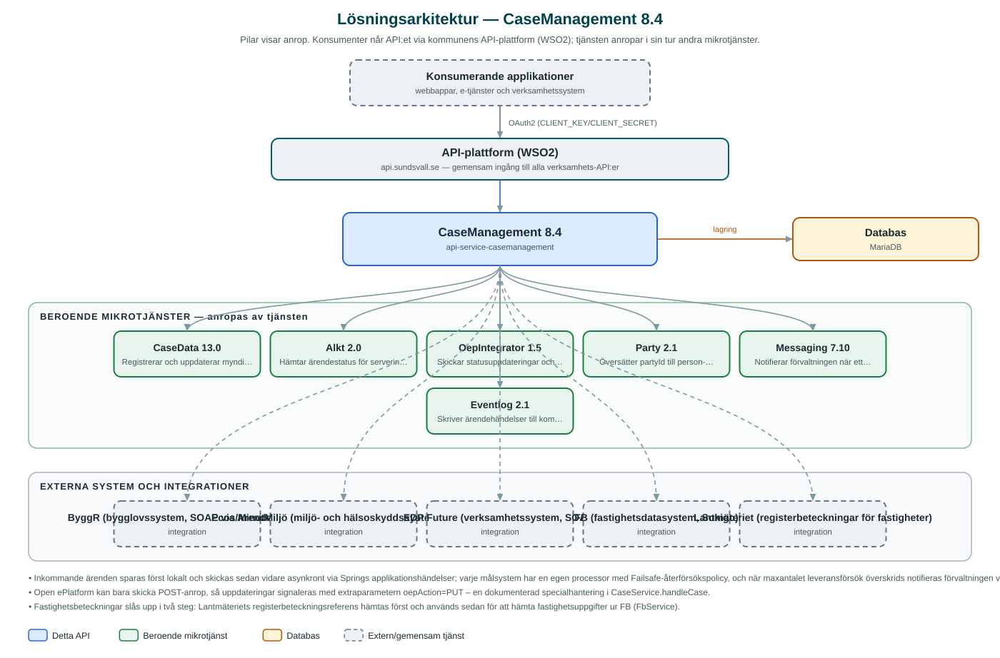

CaseManagement
Integrationslager som tar emot ärenden från e-tjänster och skickar dem vidare till rätt verksamhetssystem – ByggR, Ecos, Alk-T, EDP Future eller CaseData – och ger en samlad statusbild tillbaka.
Om API:et
CaseManagement gör att kommunens e-tjänster inte behöver känna till vilket verksamhetssystem som handlägger ett visst ärende. E-tjänsten skickar in ärendet till detta API, som utifrån ärendetypen registrerar det i rätt system: bygglovsärenden i ByggR, miljö- och hälsoskyddsärenden i Ecos, serveringstillstånd i Alk-T, ärenden i EDP Future eller myndighetsärenden i CaseData.
Inkommande ärenden sparas först i tjänstens egen databas och skickas därefter vidare asynkront. Varje målsystem har en egen processor med återförsökslogik – misslyckas leveransen slutgiltigt notifieras förvaltningen via Messaging. Kopplingen mellan e-tjänstens ärende-id och verksamhetssystemets diarienummer sparas i en mappningstabell, som också gör det möjligt att uppdatera e-tjänsten med status.
API:et exponerar ärendestatus samlat: en fråga per externt ärende-id, per organisationsnummer eller per part slås upp mot rätt bakomliggande system via mappningstabellen. Vid registrering i ByggR och Ecos berikas ärendena med fastighetsinformation från fastighetsdatasystemet FB och Lantmäteriets registerbeteckningar.
Det här gör API:et
- Ett API mot flera verksamhetssystem – Tar emot ärenden och registrerar dem i ByggR, Ecos, Alk-T, EDP Future eller CaseData beroende på ärendetyp.
- Asynkron leverans med återförsök – Ärenden sparas lokalt och skickas vidare asynkront; varje målsystem har en processor med återförsökspolicy och notifiering via Messaging när leveransen slutgiltigt misslyckas.
- Samlad ärendestatus – Status kan hämtas per externt ärende-id, organisationsnummer eller part och slås upp i rätt bakomliggande system via mappningstabellen.
- Ärendemappning – Kopplingen mellan e-tjänstens ärende-id och verksamhetssystemets diarienummer lagras och används för status och uppdateringar.
- Fastighetsberikning – Fastighetsbeteckningar valideras och berikas med uppgifter från FB och Lantmäteriets registerbeteckningar innan ärendet registreras.
- Återkoppling till e-tjänsten – Statusuppdateringar och meddelanden skickas tillbaka till Open ePlatform via OepIntegrator.
API-dokumentation
API:ets samtliga resurser, parametrar och datamodeller finns beskrivna i en OpenAPI-specifikation som är hämtad ur källkodsförrådet. Den kan utforskas interaktivt i Swagger UI eller laddas ner som YAML.
Teknisk dokumentation
Nedan beskrivs hur tjänsten är uppbyggd, vilka andra tjänster den anropar och vad som krävs för att driftsätta den. Informationen är härledd ur källkoden och dess konfiguration på GitHub.
Arkitektur

API:et är en mikrotjänst (Java 25, Spring Boot via kommunens gemensamma tjänsteplattform dept44 (8.0.8), byggd med Maven). Konsumenter når tjänsten via kommunens gemensamma API-plattform (WSO2) på api.sundsvall.se – tjänsten anropas aldrig direkt. Tjänsten anropar i sin tur andra mikrotjänster i kommunens tjänstelandskap. Lagring: MariaDB med Flyway-migrationer; inkommande ärenden och mappningen mellan externa ärende-id:n och verksamhetssystemens diarienummer lagras här. Övriga integrationer som förekommer i koden: ByggR (bygglovssystem, SOAP via ArendeExport), Ecos/MinutMiljö (miljö- och hälsoskyddssystem, SOAP), EDP Future (verksamhetssystem, SOAP), FB (fastighetsdatasystem, Sokigo), Lantmäteriet (registerbeteckningar för fastigheter).
Teknikstack
- Språk: Java 25
- Ramverk: Spring Boot via kommunens gemensamma tjänsteplattform dept44 (8.0.8), byggd med Maven
- Databas: MariaDB med Flyway-migrationer; inkommande ärenden och mappningen mellan externa ärende-id:n och verksamhetssystemens diarienummer lagras här
- Övrigt: SOAP-klienter (genererade ur WSDL) mot ByggR, Ecos och EDP Future, Failsafe-återförsökspolicyer, asynkron hantering via Springs applikationshändelser, Resilience4j (circuit breakers)
Beroenden till andra mikrotjänster
Tjänsten anropar följande mikrotjänster. Versionerna är hämtade ur källkodens integrationsklienter.
| Tjänst | Version | Användning |
|---|---|---|
| CaseData | 13.0 | Registrerar och uppdaterar myndighetsärenden, t.ex. parkeringstillstånd. |
| Alkt | 2.0 | Hämtar ärendestatus för serveringstillstånd ur Alk-T. |
| OepIntegrator | 1.5 | Skickar statusuppdateringar och meddelanden tillbaka till e-tjänsteplattformen (Open ePlatform). |
| Party | 2.1 | Översätter partyId till person- eller organisationsnummer. |
| Messaging | 7.10 | Notifierar förvaltningen när ett ärende inte kunnat levereras till målsystemet. |
| Eventlog | 2.1 | Skriver ärendehändelser till kommunens centrala händelselogg. |
Konfiguration och driftsättning
- application.yml med URL och OAuth2-klientuppgifter för de beroende mikrotjänsterna samt anslutningsuppgifter (användarnamn/lösenord) för SOAP-tjänsterna ByggR, Ecos, EDP Future och FB
- MariaDB-anslutning; databasschemat versionshanteras med Flyway
- Återförsökspolicy (antal försök och intervall) för leverans till målsystemen
- Truststore för certifikatverifiering mot externa system
- Anrop görs per kommun – municipalityId ingår i API-vägarna
Noterbart ur källkoden
- Inkommande ärenden sparas först lokalt och skickas sedan vidare asynkront via Springs applikationshändelser; varje målsystem har en egen processor med Failsafe-återförsökspolicy, och när maxantalet leveransförsök överskrids notifieras förvaltningen via Messaging (ByggrProcessor med flera).
- Open ePlatform kan bara skicka POST-anrop, så uppdateringar signaleras med extraparametern oepAction=PUT – en dokumenterad specialhantering i CaseService.handleCase.
- Fastighetsbeteckningar slås upp i två steg: Lantmäteriets registerbeteckningsreferens hämtas först och används sedan för att hämta fastighetsuppgifter ur FB (FbService).
- README listar ByggR, Ecos, Alk-T och CaseData som målsystem, men koden hanterar även EDP Future via SOAP – koden är sanningskällan.
Källkod
Källkoden är öppen och finns hos Sundsvalls kommun på GitHub. I källkodsförrådet finns även instruktioner för att klona, konfigurera och starta tjänsten i egen miljö.